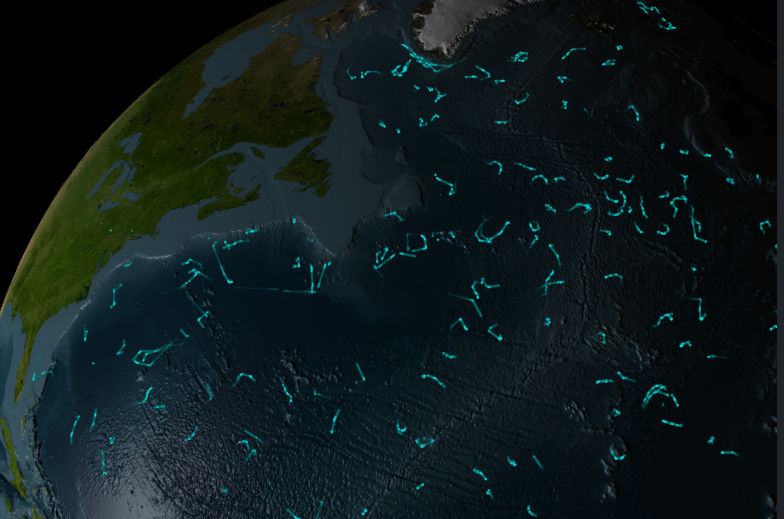
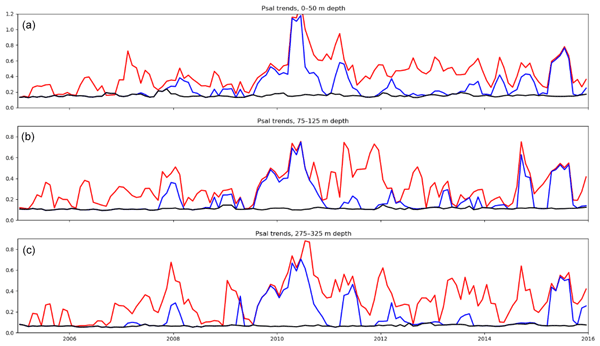
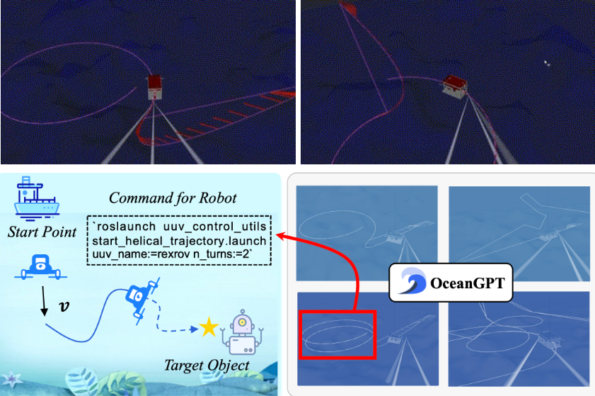

Research Insights

Advanced Ocean Reanalysis of the Northwestern Atlantic
Provides a 30-year high-resolution reanalysis improving ocean circulation and climate studies in the Northwestern Atlantic region.
Download PDF

Spatial-Temporal Data Mining for Ocean Science
Reviews how spatial-temporal ocean data is used for prediction, event detection, and anomaly analysis in marine science.
Download PDFOceanGPT: A Large Language Model for Ocean Science Tasks
Introduces a specialized language model trained on oceanographic literature to assist researchers in data analysis and hypothesis generation.
Download PDF
Deep Learning Approaches for Coral Reef Health Assessment
Presents a novel deep learning framework for automated coral reef health assessment using underwater imagery.
Download PDF

Global Distribution and Impact of Marine Microplastics
Comprehensive study on the distribution, sources, and ecological impacts of microplastics in the world's oceans.
Download PDF

Long-term Effects of Ocean Acidification on Marine Ecosystems
A 10-year longitudinal study examining the impacts of ocean acidification on various marine species and ecosystems.
Download PDF